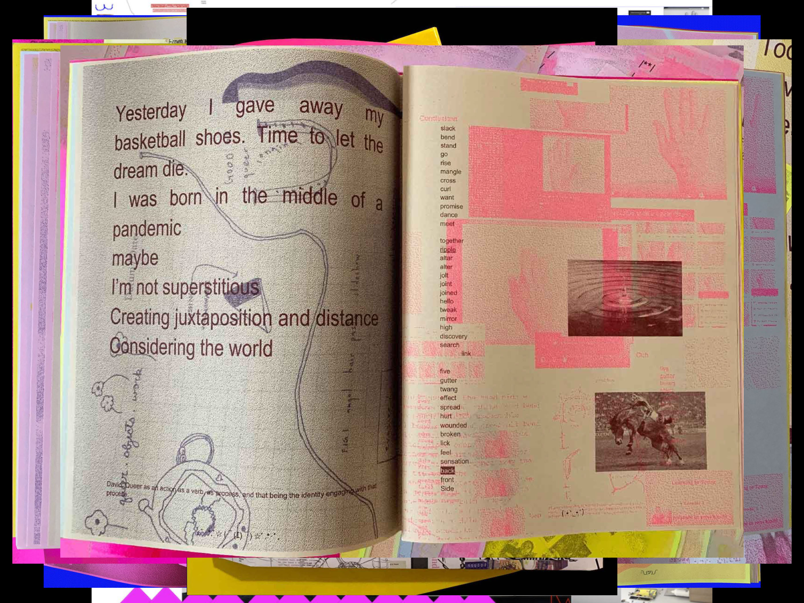
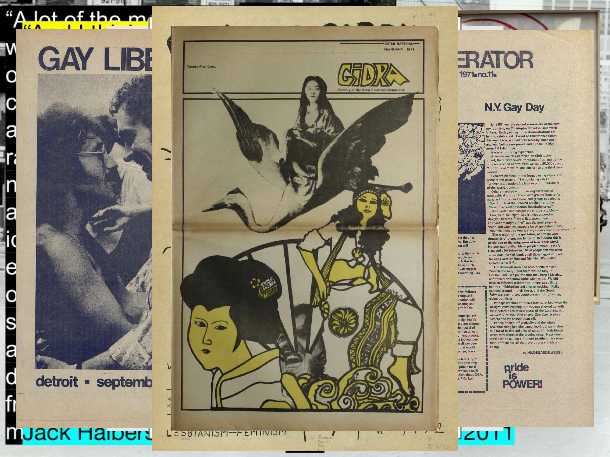

Type Electives: Provoking Type
March 19, 2024
It’s still challenging to find robust, serious discussions around queerness and design, even in contemporary discourse and scholarship. There are projects and writings here and there, but there should be even more; looking at non-normative approaches to design is crucial in this moment, as we see graphic design finally splintering and fragmenting into a wide plurality of modalities, practices, identities, and histories. This is taking many forms, from the dismantling of the graphic design canon to an ever-widening understanding of how white supremacy and heteropatriarchy have worked throughout history to shape the discipline as it exists today.
It’s become impossible for me to keep queerness separate from the work that I do right now as a design educator, as an artist, and as a community member who helps organize a queer and trans print studio and library here in Providence, RI. For me, queerness, identity, ancestry, archives, politics, and design are all at once entangled and intersecting, and I know this is the case for many who struggle to understand their own place in graphic design—especially in design education, but also as practioners. My own history with “What is queer typography?” began with a question I naively asked myself on are.na a few years ago, to what has become an enormously expanding conversation about queer methodologies in design and what they might look and feel like now, in 2024. So to be in direct conversation with you, either in-person or as a reader of this essay, is thrilling for me, because this is the only way that expansion happens—through research and ongoing dialogue and exchange.
“What is queer typography?” has taken a few different forms. I originally wrote it as a talk for the Type Directors Club, who invited me to speak at their “Type Drives Communities” conference in May 2021. I delivered the talk on Zoom, and the questions and discussion after the talk were so excellent, and the audience so engaged, and I realized in that moment that there might be an even larger need, beyond that one event. So I did what many of us do now, when we want to spread the word—I made a zine.
I think I printed 100 of these pink, black, and yellow zines on the risograph at Binch/Queer.Archive.Work, right after we moved to our new studio in May 2021. I posted about it on Instagram, and immediately received a lot of attention. They sold out, and this little zine has traveled far and wide since. I posted the talk on my website, as well as scans of the original zine, so it could be read more widely, and people are still reaching out to me about it now, on an almost weekly basis, to inquire about queer typography and design.
Later that year, I was invited to deliver the talk again, this time for Queer Design Club. I was then interviewed about it in PRINT magazine, and the zine was exhibited at Sprint Milano in Italy, as well as with Aggie Toppins’ “TL;DR Zine Archive” project. The essay has been republished a couple of times, first in GenderFail’s An Anthology of Queer Typography Vol. 1, and then recently in Amalgam 4, edited by Pouya Ahmadi. I reprinted it and distributed a new edition of 50 copies for Printed Matter’s Sunday Zine Fair at the Brooklyn Museum in November 2023, on the occasion of the opening of Copy Machine Manifestos. It was also translated into Korean by In-ah this past fall, and redesigned and republished by them as a handwritten zine.
This is the first time since 2021 that I’m giving the talk again. I’m going to deliver it “as is”—with a few minor updates but mostly as it was originally written three years ago. And as I think about continuing this research—I’m on sabbatical starting in June 2024, and possibly writing a book—I’d love to hear your feedback, your thoughts, what resonates with you, or not. So here it is.
--------------
I’ve been looking for queer typography. Is anyone else out there? Who else is searching? I wonder if this is even a valid question. Looking for queer anything often feels lonely. The word queer resists definition, sometimes aligned with ideas about rejection, refusal, deviating from the expected, away from the normative. It’s certainly a political word, one that’s taken on expansive qualities throughout its history, qualities that aren’t necessarily confined to gender and sexuality.
In 1993, gender studies and queer theory scholar Eve Kosofsky Sedgwick wrote: “A lot of the most exciting recent work around ‘queer’ spins the term outward along dimensions that can’t be subsumed under gender and sexuality at all: the ways that race, ethnicity, postcolonial nationality criss-cross with these and other identity-constituting, identity-fracturing discourses, for example. Intellectuals and artists of color whose sexual self-definition includes ‘queer’ . . . are using the leverage of ‘queer’ to do a new kind of justice to the fractal intricacies of language, skin, migration, and state.” (Eve Kosofsky Sedgwick, Tendencies, “Queer and Now,” p.8, 1993)
And so in this search for queer type (or for queering type, or queerness in typography), or I would even just say “queer design” today, I’m looking for that messy mix of criss-crossing connections and intersections. And that is the spirit of this talk, a kind of wandering and searching that may not result in clear answers, but could open up space for community and conversation. And as I was saying earlier, that’s exactly what this talk did, and what I hope to continue with you.
That’s why I’ve decided to pose this question here, in this particular space. This talk (this essay) is an inquiry and an invitation. Within it, you’ll find an understated request. A need to connect with kin, with like-minded folks searching for other histories, other approaches, other ways of doing design that don’t necessarily adhere to what’s expected or what’s considered successful or meaningful. I’m looking for ways to resist what we’ve come to know as the graphic design canon.
When I say resistance here, I’m talking about a really long trajectory here, the stories of struggle and oppression and liberation that can be found wherever power is doing its thing. Heteropatriarchy, capitalism, white supremacy, and settler colonialism—this is the matrix of domination, as defined by Patricia Hill Collins in 1990. All of these forces are in full effect today, in classrooms and schools and institutions, intersecting and impacting every one of us in art and design, in unequal ways. The matrix of domination produces particular burdens and privileges that determine who gets to succeed, as well as who doesn’t. It shows us who gets to be collected in the archive, who does or doesn’t get written into history. Who is labeled as Other, who is dismissed as failure.
Failure can be closely connected to queerness in this way. And for this idea, I’m thinking about the work of queer theorist Jack Halberstam, and his book The Queer Art of Failure (2011). In it, he asks us to look closely at what we might learn from failure in our archives, “the failures that we might build upon in order to counter the logics of success that have emerged from the triumphs of global capitalism.” Those logics of success are the specific ways that heteropatriarchy is maintained in capitalism, through acts of accumulation, reproduction of wealth, individualism, exceptionalism, control, and sovereignty. Values like these perpetuate racial capitalism, and we continue to teach and uphold these values in art and design schools today. Many of us manifest and reproduce these values when we call ourselves designers and participate in disciplines that are sustained by, and depend upon, those same logics of success.
Halberstam goes on to write that: “failure is the map of political paths not taken, though it does not chart a completely separate land; failure’s byways are all the spaces in between the superhighways of capital.” Those in-between spaces that Jack asks us to consider can be found right here in the archive, where we can learn from the incomplete stories of deviants, wild agitators, and trouble makers who didn’t survive, those who were maybe not legible at all, along with those who were neglected or totally erased by capitalism’s relentless drive along those logics of success. Those who don’t measure up within any territory that defines itself as a discipline or an industry. (Jack Halberstam, The Queer Art of Failure, “Low Theory,” p.19, 2011)
And so, that brings us back to type. In a talk by Dennis Grauel, he identifies some of the ways that the type design industry participates in those logics of success. Type design, and the business of making and selling fonts, he says, is political. And intimately entangled with capital. He brings up the re-brand of the CIA, here in the US, with the partnership of the type foundry Grilli Type, and how fonts frequently uphold and support imperial power. (“Designing With(in) the Mess,” 38:50, 2021)
He asks: “when we excuse the foundry for selling a product to anyone with money, maybe we’re failing to imagine ways that fonts could resist the structures of capitalism.” Okay, so this might be one place to begin, this failure of the imagination that Dennis mentions. Maybe we should approach “what is queer typography” by starting with this more challenging question—how might type resist capitalism?
Dennis has a few suggestions. One is to shift value from a production-based paradigm to a maintenance one—using care as the framework for type design and distribution. Radical acts of care can be one of the most effective ways to resist capitalism, which so deeply needs to extract and to exploit without concern for others. Dennis also brings up alternative pricing strategies and the idea of “messy” licensing. And a shift from the industry-based *foundry* to the community-based *shared library*. As well as open source and beta releasing, and how these models work against commodification, keeping type products fluid and changing, never really official, never totally complete.
These are all excellent suggestions, but are they queer? I’m not sure. At the core of typography, especially in how it’s been taught and practiced for centuries, is control, precision, the preservation of standards, the idea of perfect legibility, and the narrative of the lone type designer as a kind of genius author. These core values dovetail perfectly with capitalism’s logics of success. Not only are they aligned, but they are produced by and they help sustain heteronormative capitalism and the totalizing idea of universal design standards, dictated by the ideologies of Modernism. So yes, I propose that anything that appears to push back against these ideas might take us to queer places, people, and practices. We’re getting warmer.
When I asked the question on Twitter—what is queer type—the responses were all over the place, which I expected. Several folks replied with stylistic ideas, responding with type that’s been adorned with rainbow colors or other graphic motifs. These may be important for other reasons, but it’s not style that I’m after here. Also—can something that reads as “corporate pride” ever be considered queer? I don’t think so. Queerness may be expansive, but queer values typically run counter to mainstream conformity and dominant systems.
This was stated to me in another way by Robin Mientjes, a type designer who lives and works in Oslo, Norway. When asked what she thought queer design was, she replied: attitude. “And I think that covers a lot of what queerness means: an attitude in the face of conformity, an attitude in the sea of passivity, an attitude to say yes when others say no. And that’s poetic and abstract, but that’s fine for our thesis today.” This exchange with Robin was one of those beautiful moments of criss-crossing that I was looking for, in the lonely search, and I was grateful to hear it, to know that queerness is difficult to define in formal terms, but that it might involve a stance, a particular position, an attitude. The last thing that I would want for my research is to fix these ideas into specific definitions in any way, so let’s keep it poetic, as Robin suggests, and continue loosely.
The type designer Dan Rhatigan also replied, with his extensive research into gay publishing in the 20th century, especially around adult magazines and the large number of gay photo publications that began circulating in the 1960s and 70s. The ability to publish gay and lesbian content wasn’t exactly easy or mainstream at that moment, but it was becoming more and more possible, and so for the first time ever, typographic decision-making was happening in media, although mostly for a white, gay male audience. Dan focuses on the Letraset rub-down letters that were used in the cover designs for many of these publications, and shares his own project where he re-traces those covers as a way to isolate and examine the type, and reclaim history.
I’ve also been deeply interested in publication design from within the turbulence of the civil rights era, leading up to the AIDS crisis in the 80s and 90s. My focus has been more on gay and lesbian liberation. And when I use language like that—gay and lesbian—rather than more inclusive terms like queer or LGBTQIA+, it’s to acknowledge context, and how language operates in such limited ways. And the fact that this language sometimes reflects the limits and inequities of the movements themselves.
These are the newsletters and zines that documented what was happening, pre-internet, in those collective struggles towards liberation. This was how an underground network designed information, stayed in touch, and maintained care. These radical publications were all very different from each other, but there is a kind of approach and some fairly consistent design and typographic choices that they made, moves that were in direct contrast to the slickness and corporate control of mainstream graphic design of that time—the era of Massimo Vignelli, Unimark, and the rise of corporate identity standards.
So here we can see the predominance of do-it-yourself techniques that worked well with Xerox machines and mimeograph printers, media where duplicates could be made directly from an original, like the risograph many of us love today. Also evident were non-traditional acts of publishing as protest, the use of language and the body in public space, to challenge what we even mean by publishing. Radical artists, punk musicians, poets, political activists, and other marginal communities and movements were able to publish because they found access to cheap printing. Found in the archive today, their newsletters and zines are full of inspiring examples of hand lettering, illustration, collage, and typed—rather than professionally typeset—pages.
Looking back now, from more than 50 years in the future, I hesitate to identify these designs themselves as queer. These materials do not define a queer aesthetic, and it would be misguided for us to arrive at that conclusion. Many movements towards liberation used similar tactics, like feminism, racial justice, labor, and anti-war movements. But still, there is something queer going on here, I think, in the moves and the acts and the attitude—design decisions that were made out of necessity, outside of the dominant forces of the design industry and mainstream publishing. These were decisions that were made without access to sophisticated tools, or editorial design expertise. In a very broad sense, queerness can be located in the radical, outsider status of these publications and their designs. This is queerness as an underground, alternative way of creating networks of care. Queerness can be located here in the scrappy, ad hoc, and sometimes homemade designs that were directly related to the urgency of protest and activism and survival.
Later on in the 1980s, for Black and Brown communities who were trying to survive the HIV/AIDS pandemic, there was a need to work urgently with these available tools, and to do so freely, away from regulated spaces like the discipline of graphic design, as it was being defined in the academic and corporate worlds. These are club flyers for disco and hip-hop events in the late 1970s and early 80s, and they’re extraordinary. Many of them were made by Buddie Esquire (1958–2014), a Black, self-taught graphic designer who was speaking to, and on behalf of, counterpublics that were outside of mainstream power. He used rub-down type, hand lettering, and illustration to create a polyphonic voice that was legible only to some. These were addressing not necessarily a queer audience, but a community that was illegible nonetheless, in relation to white supremacy.
At the same time, throughout the 1980s and 90s, there was graphic material coming out of trans culture and Harlem’s Black and Latino ballroom culture in NYC and elsewhere. These materials suggest narratives of desire and escape. Their designers played freely with pop culture and familiar symbols of consumer power, like an ad for Tiffanys or a Broadway Playbill, or an Obsession perfume bottle, shaping them on their own terms.
In the 1990s, desktop publishing began to shift the tactics and technologies that were available, and with it came a new freedom to mix type styles to express plurality and a diversity of ideas. We tend to associate zine-making with contemporary print culture, but radical queer and trans publishing was incredibly important in the 90s, connecting communities outside of traditional spaces of power, just before the internet and social media would transform everything.
In “7 Genders, 7 Typographies: Hacking the Binary,” an online feature published by Walker Art Center in 2016, seven graphic designers were brought together to speculate about typography, using gender metaphors. These gender categories were then defined typographically by each of the designers: female, male, intersex, trans, personal, non-conforming, and eunich. Looking back to this article now, I don’t think it’s useful to categorize typography in this way, to examine or classify type according to gender. It’s difficult for me to find value here in relation to today’s discussion about queerness. Gender is not a metaphor. In an attempt to open up an understanding of how we think about either typography or gender, the use of metaphor here shuts things down and fixes them into place.
Still, I think we’re onto something else here. One of the references in this article is an important, striking piece of type that appears in the 1993 film Queen of the Underground. The subject of the film was Octavia St. Laurent, a performer and AIDS educator who self-identified at different times in life as Intersex and/or Trans. She was active in New York City’s Black and Latino drag society throughout the 1980s and 90s, and passed away in 2009.
Her name is the first thing we see as the film opens, identifying her as the title subject as “OCtAViA” enters at the top of the screen. Her name is set in a mix of both upper and lowercase letters. It floats down over her face, animating gently, waving hello, before settling at the bottom of the screen. The entire sequence only lasts 15 seconds. Designer Riley Hooker, writing for the Walker, refers to Octavia’s modified case setting as bearing a trace of “leet,” also known as eleet or leetspeak, sometimes written like this: “1337 5p34k.” Leet was an early internet way to modify spelling, originating on bulletin board systems in the 1980s; it was a pre-emoji way to encode or even obscure language with additional meaning through the act of typing. Riley wrote that it brought “a new logic into the typographic vernacular.” Leet can be seen as a kind of argot (a secret language used by sub-groups to prevent outsiders from understanding what’s being said). An example would be typing out the word “hacker” in stealth mode, like this: “h4x0r,” in order to avoid being caught.
Queerness has a close relationship to secret languages. Another example is the handkerchief code, also known as flagging, which was popular in the US in the 1970s and 80s. And Polari, a slang language popular with criminals, sex workers, and gay subculture in 19th century England, which was in use until recently. I think there’s a crucial connection to be made here, between queerness and legibility. And what it means to use language—how it sounds, how it looks, how it writes—as a way to control legibility and meaning.
When we teach typography, the focus is typically on control. We learn to master the Western rules and finer points of typography as though they’re universal, as though there exists an ideal way to read. Perfect typography means predicting an idealized reading experience. The idea of “perfect typography” subscribes to a very particular power dynamic, involving knowledge, manipulation and control. It’s partly perpetuated by the narrative of the genius type designer and typographer, who possess the proper education and expertise, designing and shaping language and manipulating meaning. They create precisely engineered typographic systems that enable perfect legibility on pages, walls, and screens. But—who are these unseen powers controlling the read in these environments? For whom do these genius type designers and typographers speak? What kind of idealized audience has been imagined in their designs? How do we, as designers, participate in these logics of success?
Here, I think it’s important to think about legibility in a political sense. Political scientist James C. Scott writes that “Legibility is a condition of manipulation. Any substantial state intervention in society . . . requires the invention of units that are visible. The units in question might be citizens, villages, trees, fields, houses, or people grouped according to age, depending on the type of intervention. Whatever the units being manipulated, they must be organized in a manner that permits them to be identified, observed, recorded, counted, aggregated, and monitored.” (James C. Scott, Seeing Like a State, p.183, 1998)
And so for decades, we’ve seen how the fight for queer visibility—the fight to be seen by the state, to become clearly read units—leads to status and success shaped not on our own terms, not on queer terms, but by heteropatriarchy: terms like marriage equality, inclusion in the military, and the ability to accumulate and reproduce wealth. Participation in these logics of success demands legibility. A clear reading and gridded organizing of bodies and identities leads to prediction; predictive models lead to policing, and modes of surveillance that accelerate and engage with every aspect of our lives.
When this legibility is problematized, or complicated in non-normative or non-conforming ways, those actions are read as threats. And depending on who you are, especially if you fall outside of the idealized subject—that is, if you’re not white, cis, and non-disabled—those acts and identities are severely punished, or erased.
In a conversation with Nat Pyper, who self-describes as an alphabet artist who designs fonts, and nicole killian, an artist and educator who sets their name in all lower-case, we talked about the question of queer typography. At one point, Nat said a remarkable thing that really shifted the entire conversation: they said, “there is no queer history, only a history of queer acts, and I wonder how that might be mapped onto typography, like: there’s no queer typography, only a history of queer _________” . . . and after a few seconds it became so obvious to us: queer reading and writing.
There is no queer typography, only queer acts of reading and writing. It still feels new to say this now, even after this conversation three years ago, although this is a statement that owes so much to history, to more than three decades of queer theory and gender studies that brought us, among other things, the understanding that gender is an act that one does, rather than a thing that one is (Judith Butler, Gender Trouble, 1990). And so, my original question, what is queer typography, has been complicated. Let’s rephrase it now like this: what is queer typing?
One of Nat’s projects is titled A Queer Year of Love Letters. It’s a collection of eight fonts that are freely distributed on Library Stack. The fonts are named after queer artists, publishers, and activists who were particularly inspiring in their non-conforming practices and lives. One of them is based upon the Women’s Car Repair Collective in St. Louis, Missouri in the 1970s. Another one references Robert Ford, publisher and designer of the Black gay and lesbian underground magazine THING from 1989 through 1993. Others are based on Martin Wong, the gay Chinese-American painter who died of AIDS in 1999, and G.B. Jones, the Canadian artist, filmmaker, and musician who published the queer punk zine JDs in the 1980s, with Bruce LaBruce. One is based upon Ernestine Eckstein, the activist who was the only Black lesbian at an early gay rights protest that took place in 1965 in front of the White House. Here are Nat’s words, introducing the project, which come in the form of a love letter.
Dear writer,
A Queer Year of Love Letters is a series of fonts that remembers the lives and work of countercultural queers of the past several decades. The series aims to make the act of remembering these overlooked and illegitimate histories accessible to other people, as easy as typing. Better yet: it aims to make the act of typing an act of remembering. That these fonts might be considered typefaces is incidental. They are an attempt to improvise a clandestine lineage, an aspatial and atemporal kind of queer kinship, through the act of writing.
I began making these fonts in order to rapidly document and disseminate the work and ideas that they cite. I pack these histories, or part of them, into fonts for a couple of reasons. First, font files are durable. OpenType fonts (.OTFs) have persisted in their ubiquity since the late 90s and maintain their utility as a nimble and reliable format. Second, fonts have the capacity to contain a hefty amount of information within a tiny package. In under 100 kilobytes, an entire alphabet! In the font’s metadata, a manifesto! Fonts then function as a useful format for ferrying information from one place to another.
I am using these fonts as time machines. These machines take me back—to Robert Ford and Black gay and lesbian underground publishing in early 1990s Chicago; to the Lesbian Alliance, a socialist-feminist enclave in 1970s St. Louis, Missouri; to G.B. Jones and queer punk filmmaking in 1980s downtown Toronto—but they also take me forward to unknown futures through the act of writing itself. In use, these fonts engage the past as a provocation. They engage the past as a verb.
Is this romantic? Yes.
Love,
Nat
Be Oakley also has a type design project that reanimates queer, countercultural acts, called Protest Sign Fonts, released through their publishing project GenderFail. Each typeface is inspired by hand lettering from protest signs, like this one on the left from the early transgender group STAR (Street Transvestite Action Revolutionaries), and on the right, an activist who holds a sign reading, “i am your worst fear i am your best fantasy” in 1970. These open type design projects by Nat and Be use the glyphs of a font and the structures surrounding the distribution of fonts as opportunities to disseminate radical histories, to reference queer acts, and to embed these references into present-day acts of queer writing. They work to disseminate fonts under values of maintenance and care. There’s a similar project from Paul Chan, from 2002, and more recently, the fonts of type designer Tré Seals, from their foundry Vocal Type, and Bye Bye Binary, a French type foundry and collective.
Beyond the distribution of fonts, there is the problem of the individual author who maintains control over a system. That is, the problem of sovereignty—the authority to govern. In the governance of typography we have a very long history of prioritizing white men as cult heroes. We establish their legacies, worship and emulate them, award prizes, and evolve entire industries in and around their power.
One way to challenge this mythology is to experiment with non-hierarchical and non-linear typographic practices that prioritize the collective—moving from the I to the we. At Queer.Archive.Work, a non-profit community space that I help organize, we designed a publication that experimented with the collective—in this case, a loosely gathered group of 25. Early on during the most isolating of covid times, without a clear agenda, we created online zoom workshops that simply made space for being and making together.
We let our content evolve from the collective interactions of the group, all of which happened online. We characterized it as queer, collaborative writing, which then turned into queer editing, and designing, in a google doc. The group produced 60 pages of designed material, without any one author or governing system imposed on the process. This resulted in something that speaks clearly to some, less so for others. The risk of turning away some readers was made up by the desire for an open, communal space for queer relating, making, and action that produced something that helps to shape who we are as a community. I’ve never seen anything quite like it.
If this talk answers anything about the question “what is queer typography?” I hope it’s this—that we need to stay with queer as an action, actively engaging with the past and the future as a verb, as Nat says. As in: queer acts of disrupting, interrupting, agitating, and surviving against normative logics of success. I propose that we turn away from rainbow style and gender metaphors, towards queer acts of doing. From queer type to queer typing. Queer acts of reading and writing. Performative, non-conforming acts that deviate from the expected; acts that focus on the people and the communities where good trouble emerges. Acts that center those who perform deviant acts of design in the face of conformity.
Let’s search the archives and all of the spaces in-between the superhighways of capital, to find the activism in the queer lives of Octavia St. Laurent and Marsha P. Johnson and Angie Xtravaganza and David Wojnarowicz, as well as the countless forgotten artists and activists whose names we don’t know. Let’s search for the queer acts that lead to very specific kinds of decisions, whether it be how to sign your name, or how to start a movement.



